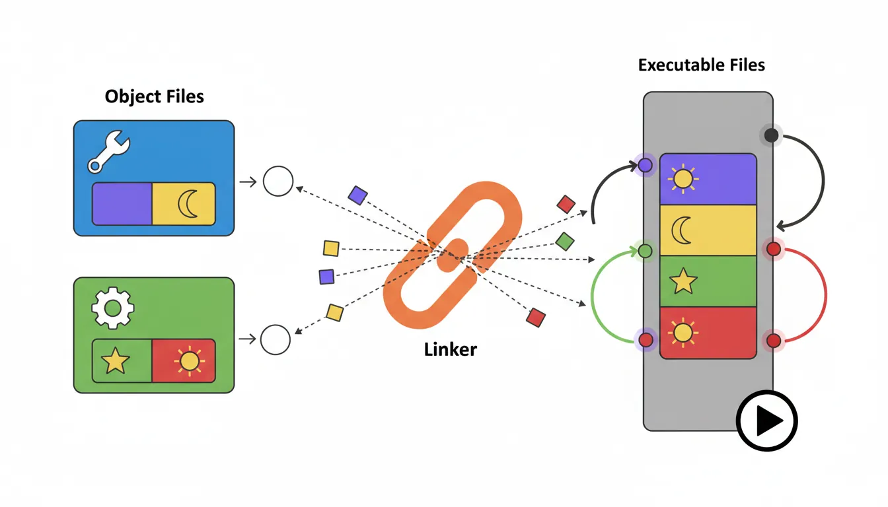
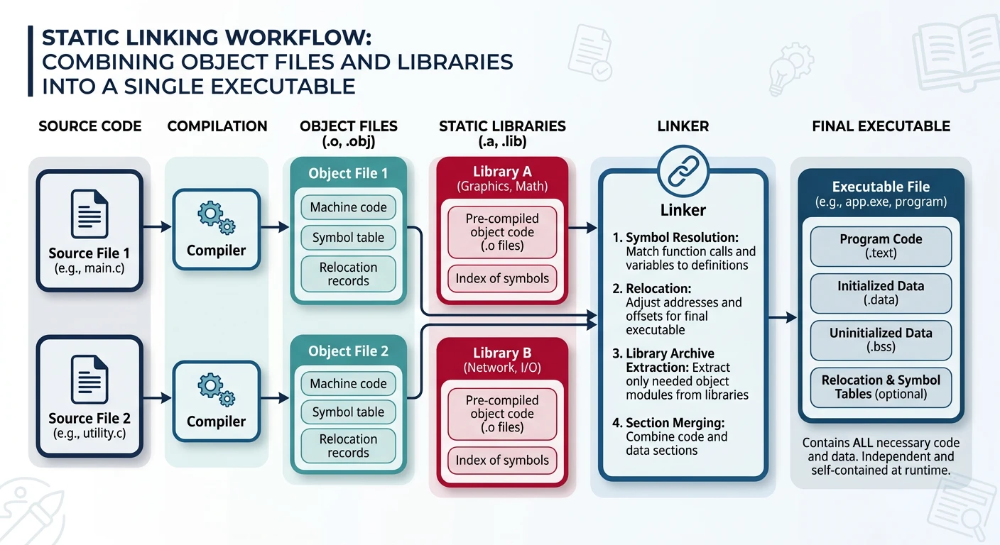
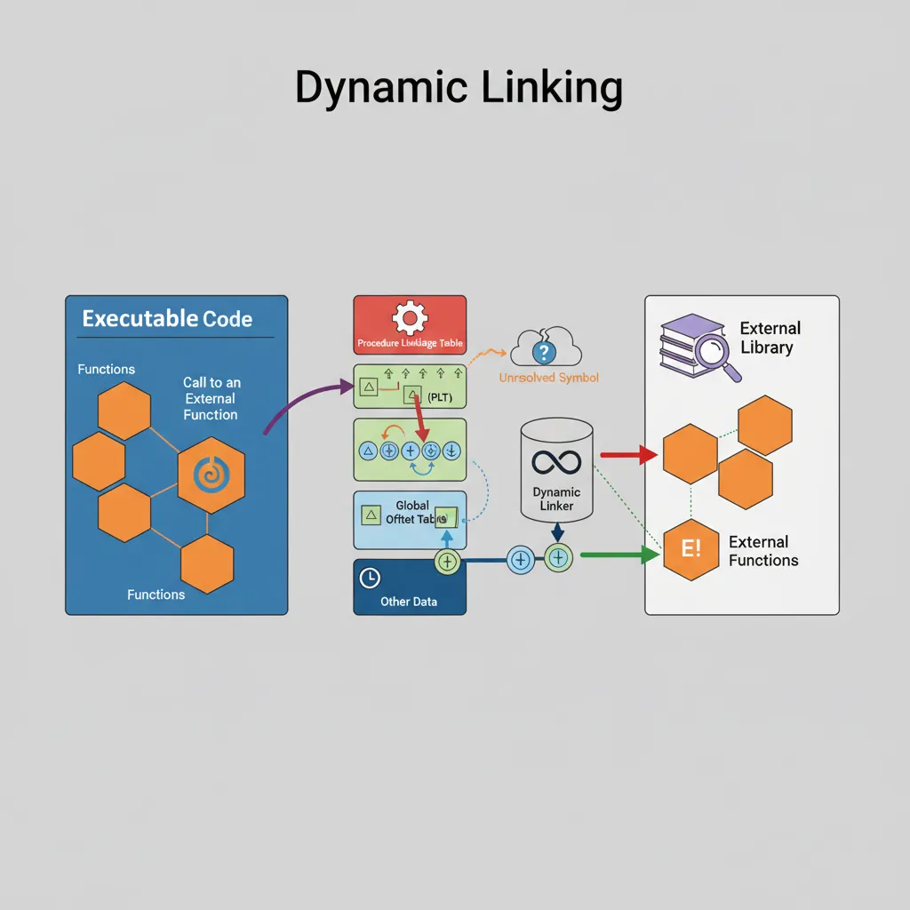

x86 Assembly Series Part 15: Linking & Object Files
February 6, 2026Wasil Zafar35 min read
Master the ELF format, understand sections (.text, .data, .bss), symbol tables, relocation entries, and the complete linking process from object files to executables and shared libraries.
ELF: Executable and Linkable Format is the standard binary format on Linux/Unix. It describes object files (.o), executables, and shared libraries (.so).
# View symbol table
nm program
objdump -t program
# Symbol types:
# T/t = text (code)
# D/d = initialized data
# B/b = BSS (uninitialized)
# U = undefined (external reference)
Relocation
Relocation is how the linker patches addresses in object files to create a runnable executable:

The linker relocation process: resolving symbol references and patching addresses across object files
; Non-PIC (absolute addressing)
mov rax, [my_var] ; Needs relocation at runtime
; PIC (RIP-relative) - preferred for shared libraries
mov rax, [rel my_var] ; Uses RIP-relative addressing
lea rdi, [rel my_var] ; Get address of my_var (PIC)
; For external/global data in shared libraries, use GOT:
mov rax, [rel external_var wrt ..got] ; Load via GOT
Why PIC? Position-independent code can load at any address, enabling shared libraries, ASLR (Address Space Layout Randomization), and memory sharing between processes.
Static Linking
Static linking combines all object files into one standalone executable:

Static linking: merging object files and static libraries into one self-contained executable
# Create static library from object files
ar rcs libmylib.a file1.o file2.o file3.o
# Link with static library
ld -o program main.o -L. -lmylib
# Or with gcc:
gcc -static -o program main.o -L. -lmylib
# View archive contents
ar -t libmylib.a
# Extract member
ar -x libmylib.a file1.o
Static Link Process
1. Collect all object files and libraries
2. Resolve symbol references
3. Merge sections (.text, .data, .bss)
4. Apply relocations (patch addresses)
5. Write executable with all code embedded
Pros: No runtime dependencies, faster startup
Cons: Larger executables, no library updates without recompile
Dynamic Linking
Dynamic linking defers symbol resolution until runtime:

Dynamic linking: GOT and PLT mechanism for lazy symbol resolution at runtime
GOT (Global Offset Table):
- Table of pointers to global data/functions
- Filled in by dynamic linker at load time
- Code references GOT entries, not absolute addresses
PLT (Procedure Linkage Table):
- Stub code for calling external functions
- First call: resolve symbol, patch GOT, call function
- Subsequent calls: jump directly via GOT (fast path)
call printf@PLT ; First call flow:
└─→ PLT stub: jmp [GOT entry]
└─→ GOT initially points back to PLT
└─→ PLT: push index; jmp dynamic_linker
└─→ Linker resolves, patches GOT
└─→ Function runs
; Calling external function (dynamic)
section .text
extern printf
global _start
_start:
lea rdi, [rel fmt]
xor eax, eax ; No float args
call printf wrt ..plt ; Call via PLT
; Or let NASM figure it out:
call printf ; NASM generates PLT reference
# View dynamic symbols
readelf -d program # Dynamic section
readelf --dyn-syms prog # Dynamic symbol table
objdump -R program # Dynamic relocations
ldd program # List shared library dependencies
Creating Shared Libraries
# Assemble as PIC (position-independent)
nasm -f elf64 -o mylib.o mylib.asm
# Create shared library (.so)
ld -shared -o libmylib.so mylib.o
# Or with gcc (adds libc):
gcc -shared -o libmylib.so mylib.o
# Link against shared library
ld -o program main.o -L. -lmylib -dynamic-linker /lib64/ld-linux-x86-64.so.2
# Run with library path
LD_LIBRARY_PATH=. ./program
# Install system-wide
sudo cp libmylib.so /usr/local/lib/
sudo ldconfig # Update library cache
Exported Symbols
; mylib.asm - Shared library source
global my_function:function ; Export as function
global my_variable:data ; Export as data
section .data
my_variable: dd 42
section .text
my_function:
mov eax, [rel my_variable]
ret
Exercise: Create and Use a Shared Library
Write mathlib.asm with add_numbers and multiply_numbers functions